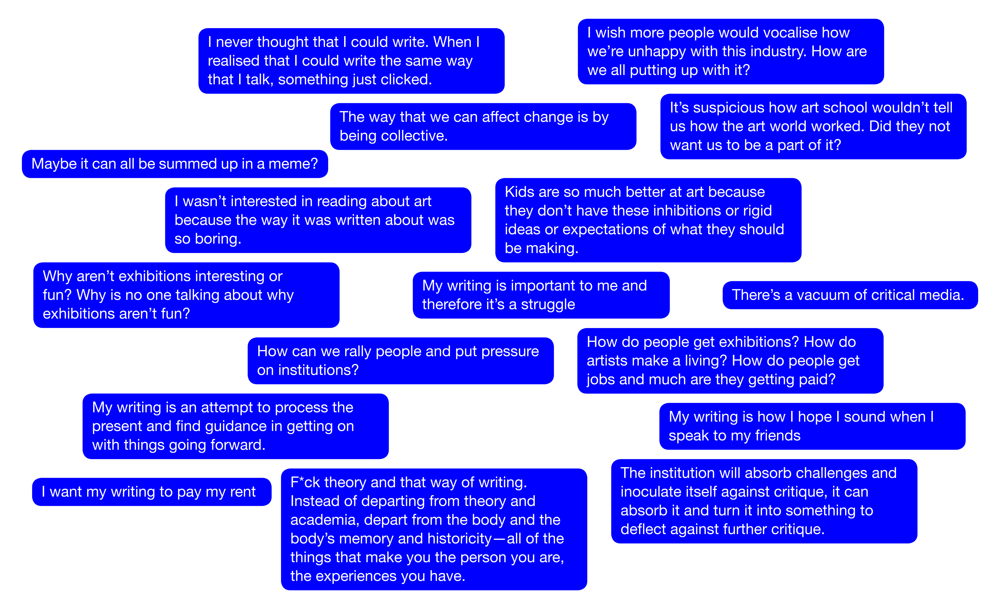

P2P is a program of virtual sharing between Pari and artist-run collectives and spaces around the world. Through a series of online workshops with friends near and far, we hope to collectively engage with ideas and models for collaboration and criticality within and beyond the arts.
For this first iteration, Pari teamed up with Gudskul and The White Pube for a series of online workshops and studio visits.
The following videos and diagrams were created from the conversations we had and issues raised during the P2P workshops.
For more information about each workshop, head here.
Gudskul workshop: Speculative Collective
Gudskul hosted their knowledge-sharing module Speculative Collective. Through random groupings, participants met with strangers to form a temporary collective. The workshop centred personal wisdoms and experiences, bringing these into conversation with one another to explore ways of generating knowledge collectively.The White Pube workshop: how to write from The Self
The White Pube held the writing workshop How to write from the self. Gabrielle and Zarina took us through the politics and logistics of critical writing — juicy stuff like embracing your own subjectivity, ditching theory, and holding institutions to account. 